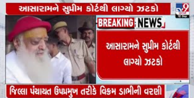

ડિસેમ્બર મહિનામાં બેક ટુ બેક ઘણા IPO સાથે આવ્યા છે. જેમાં ગયા અઠવાડિયે એક સાથે 5 મોટા IPOએ ધૂમ મચાવી દીધી હતી. રોકાણકારો પણ મુંજવણમાં મુકાઈ ગયા હતા કે કયા IPOમાં પૈસા લગાવવા અને કયામાં નહીં. જેમાં મમતા મશિનરીથી લઈને ટ્રાન્સરેલ,ડેમ કેપિટલ અને સનાથન ટેક્સટાઈલના IPOનું આજે લિસ્ટિંગ થયું છે. ત્યારે કયા IPOમાં રોકાણકારોને બમણો નફો થયો ચાલો જાણીએ.